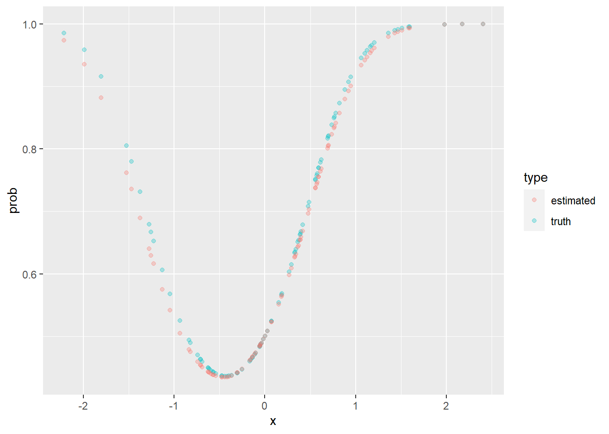

Chapter 15 Maximum likelihood
This chapter deals with maximum likelihood estimation.
The students are expected to acquire the following knowledge:
- How to derive MLE.
- Applying MLE in R.
- Calculating and interpreting Fisher information.
- Practical use of MLE.
15.1 Deriving MLE
Exercise 15.1
- Derive the maximum likelihood estimator of variance for N\((\mu, \sigma^2)\).
- Compare with results from 13.3. What does that say about the MLE estimator?
Solution.
The mean is assumed constant, so we have the likelihood \[\begin{align} L(\sigma^2; y) &= \prod_{i=1}^n \frac{1}{\sqrt{2 \pi \sigma^2}} e^{-\frac{(y_i - \mu)^2}{2 \sigma^2}} \\ &= \frac{1}{\sqrt{2 \pi \sigma^2}^n} e^{\frac{-\sum_{i=1}^n (y_i - \mu)^2}{2 \sigma^2}} \end{align}\] We need to find the maximum of this function. We first observe that we can replace \(\frac{-\sum_{i=1}^n (y_i - \mu)^2}{2}\) with a constant \(c\), since none of the terms are dependent on \(\sigma^2\). Additionally, the term \(\frac{1}{\sqrt{2 \pi}^n}\) does not affect the calculation of the maximum. So now we have \[\begin{align} L(\sigma^2; y) &= (\sigma^2)^{-\frac{n}{2}} e^{\frac{c}{\sigma^2}}. \end{align}\] Differentiating we get \[\begin{align} \frac{d}{d \sigma^2} L(\sigma^2; y) &= (\sigma^2)^{-\frac{n}{2}} \frac{d}{d \sigma^2} e^{\frac{c}{\sigma^2}} + e^{\frac{c}{\sigma^2}} \frac{d}{d \sigma^2} (\sigma^2)^{-\frac{n}{2}} \\ &= - (\sigma^2)^{-\frac{n}{2}} e^{\frac{c}{\sigma^2}} \frac{c}{(\sigma^2)^2} - e^{\frac{c}{\sigma^2}} \frac{n}{2} (\sigma^2)^{\frac{n + 2}{2}} \\ &= - (\sigma^2)^{-\frac{n + 4}{2}} e^{\frac{c}{\sigma^2}} c - e^{\frac{c}{\sigma^2}} \frac{n}{2} (\sigma^2)^{\frac{n + 2}{2}} \\ &= - e^{\frac{c}{\sigma^2}} (\sigma^2)^{-\frac{n + 4}{2}} \Big(c + \frac{n}{2}\sigma^2 \Big). \end{align}\] To get the maximum, this has to equal to 0, so \[\begin{align} c + \frac{n}{2}\sigma^2 &= 0 \\ \sigma^2 &= -\frac{2c}{n} \\ \sigma^2 &= \frac{\sum_{i=1}^n (Y_i - \mu)^2}{n}. \end{align}\]
The MLE estimator is biased.
Exercise 15.2 (Multivariate normal distribution)
Derive the maximum likelihood estimate for the mean and covariance matrix of the multivariate normal.
Simulate \(n = 40\) samples from a bivariate normal distribution (choose non-trivial parameters, that is, mean \(\neq 0\) and covariance \(\neq 0\)). Compute the MLE for the sample. Overlay the data with an ellipse that is determined by the MLE and an ellipse that is determined by the chosen true parameters.
Repeat b. several times and observe how the estimates (ellipses) vary around the true value.
Hint: For the derivation of MLE, these identities will be helpful: \(\frac{\partial b^T a}{\partial a} = b\), \(\frac{\partial a^T A a}{\partial a} = (A + A^T)a\), \(\frac{\partial \text{tr}(BA)}{\partial A} = B^T\), \(\frac{\partial \ln |A|}{\partial A} = (A^{-1})^T\), \(a^T A a = \text{tr}(a^T A a) = \text{tr}(a a^T A) = \text{tr}(Aaa^T)\).
Solution. The log likelihood of the MVN distribution is \[\begin{align*} l(\mu, \Sigma ; x) &= -\frac{1}{2}\Big(\sum_{i=1}^n k\ln(2\pi) + |\Sigma| + (x_i - \mu)^T \Sigma^{-1} (x_i - \mu)\Big) \\ &= -\frac{n}{2}|\Sigma| + -\frac{1}{2}\Big(\sum_{i=1}^n(x_i - \mu)^T \Sigma^{-1} (x_i - \mu)\Big) + c, \end{align*}\] where \(c\) is a constant with respect to \(\mu\) and \(\Sigma\). To find the MLE we first need to find partial derivatives. Let us start with \(\mu\). \[\begin{align*} \frac{\partial}{\partial \mu}l(\mu, \Sigma ; x) &= \frac{\partial}{\partial \mu} -\frac{1}{2}\Big(\sum_{i=1}^n x_i^T \Sigma^{-1} x_i - x_i^T \Sigma^{-1} \mu - \mu^T \Sigma^{-1} x_i + \mu^T \Sigma^{-1} \mu \Big) \\ &= -\frac{1}{2}\Big(\sum_{i=1}^n - \Sigma^{-1} x_i - \Sigma^{-1} x_i + 2 \Sigma^{-1} \mu \Big) \\ &= -\Sigma^{-1}\Big(\sum_{i=1}^n - x_i + \mu \Big). \end{align*}\] Equating above with zero, we get \[\begin{align*} \sum_{i=1}^n - x_i + \mu &= 0 \\ \hat{\mu} = \frac{1}{n} \sum_{i=1}^n x_i, \end{align*}\] which is the dimension-wise empirical mean. Now for the covariance matrix \[\begin{align*} \frac{\partial}{\partial \Sigma^{-1}}l(\mu, \Sigma ; x) &= \frac{\partial}{\partial \Sigma^{-1}} -\frac{n}{2}\ln|\Sigma| + -\frac{1}{2}\Big(\sum_{i=1}^n(x_i - \mu)^T \Sigma^{-1} (x_i - \mu)\Big) \\ &= \frac{\partial}{\partial \Sigma^{-1}} -\frac{n}{2}\ln|\Sigma| + -\frac{1}{2}\Big(\sum_{i=1}^n \text{tr}((x_i - \mu)^T \Sigma^{-1} (x_i - \mu))\Big) \\ &= \frac{\partial}{\partial \Sigma^{-1}} -\frac{n}{2}\ln|\Sigma| + -\frac{1}{2}\Big(\sum_{i=1}^n \text{tr}((\Sigma^{-1} (x_i - \mu) (x_i - \mu)^T )\Big) \\ &= \frac{n}{2}\Sigma + -\frac{1}{2}\Big(\sum_{i=1}^n (x_i - \mu) (x_i - \mu)^T \Big). \end{align*}\] Equating above with zero, we get \[\begin{align*} \hat{\Sigma} = \frac{1}{n}\sum_{i=1}^n (x_i - \mu) (x_i - \mu)^T. \end{align*}\]
set.seed(1)
n <- 40
mu <- c(1, -2)
Sigma <- matrix(data = c(2, -1.6, -1.6, 1.8), ncol = 2)
X <- mvrnorm(n = n, mu = mu, Sigma = Sigma)
colnames(X) <- c("X1", "X2")
X <- as.data.frame(X)
# plot.new()
tru_ellip <- ellipse(mu, Sigma, draw = FALSE)
colnames(tru_ellip) <- c("X1", "X2")
tru_ellip <- as.data.frame(tru_ellip)
mu_est <- apply(X, 2, mean)
tmp <- as.matrix(sweep(X, 2, mu_est))
Sigma_est <- (1 / n) * t(tmp) %*% tmp
est_ellip <- ellipse(mu_est, Sigma_est, draw = FALSE)
colnames(est_ellip) <- c("X1", "X2")
est_ellip <- as.data.frame(est_ellip)
ggplot(data = X, aes(x = X1, y = X2)) +
geom_point() +
geom_path(data = tru_ellip, aes(x = X1, y = X2, color = "truth")) +
geom_path(data = est_ellip, aes(x = X1, y = X2, color = "estimated")) +
labs(color = "type")
Exercise 15.3 (Logistic regression) Logistic regression is a popular discriminative model when our target variable is binary (categorical with 2 values). One of the ways of looking at logistic regression is that it is linear regression but instead of using the linear term as the mean of a normal RV, we use it as the mean of a Bernoulli RV. Of course, the mean of a Bernoulli is bounded on \([0,1]\), so, to avoid non-sensical values, we squeeze the linear between 0 and 1 with the inverse logit function inv_logit\((z) = 1 / 1 + e^{-z}\). This leads to the following model: \(y_i | \beta, x \sim \text{Bernoulli}(\text{inv_logit}(\beta x))\).
Explicitly write the likelihood function of beta.
Implement the likelihood function in R. Use black-box box-constraint optimization (for example, optim() with L-BFGS) to find the maximum likelihood estimate for beta for \(x\) and \(y\) defined below.
Plot the estimated probability as a function of the independent variable. Compare with the truth.
Let \(y2\) be a response defined below. Will logistic regression work well on this dataset? Why not? How can we still use the model, without changing it?
inv_log <- function (z) {
return (1 / (1 + exp(-z)))
}
set.seed(1)
x <- rnorm(100)
y <- rbinom(100, size = 1, prob = inv_log(1.2 * x))
y2 <- rbinom(100, size = 1, prob = inv_log(1.2 * x + 1.4 * x^2))Solution. \[\begin{align*} l(\beta; x, y) &= p(y | x, \beta) \\ &= \ln(\prod_{i=1}^n \text{inv_logit}(\beta x_i)^{y_i} (1 - \text{inv_logit}(\beta x_i))^{1 - y_i}) \\ &= \sum_{i=1}^n y_i \ln(\text{inv_logit}(\beta x_i)) + (1 - y_i) \ln(1 - \text{inv_logit}(\beta x_i)). \end{align*}\]
set.seed(1)
inv_log <- function (z) {
return (1 / (1 + exp(-z)))
}
x <- rnorm(100)
y <- x
y <- rbinom(100, size = 1, prob = inv_log(1.2 * x))
l_logistic <- function (beta, X, y) {
logl <- -sum(y * log(inv_log(as.vector(beta %*% X))) + (1 - y) * log((1 - inv_log(as.vector(beta %*% X)))))
return(logl)
}
my_optim <- optim(par = 0.5, fn = l_logistic, method = "L-BFGS-B",
lower = 0, upper = 10, X = x, y = y)
my_optim$par## [1] 1.166558truth_p <- data.frame(x = x, prob = inv_log(1.2 * x), type = "truth")
est_p <- data.frame(x = x, prob = inv_log(my_optim$par * x), type = "estimated")
plot_df <- rbind(truth_p, est_p)
ggplot(data = plot_df, aes(x = x, y = prob, color = type)) +
geom_point(alpha = 0.3)
y2 <- rbinom(2000, size = 1, prob = inv_log(1.2 * x + 1.4 * x^2))
X2 <- cbind(x, x^2)
my_optim2 <- optim(par = c(0, 0), fn = l_logistic, method = "L-BFGS-B",
lower = c(0, 0), upper = c(2, 2), X = t(X2), y = y2)
my_optim2$par## [1] 1.153656 1.257649tmp <- sweep(data.frame(x = x, x2 = x^2), 2, my_optim2$par, FUN = "*")
tmp <- tmp[ ,1] + tmp[ ,2]
truth_p <- data.frame(x = x, prob = inv_log(1.2 * x + 1.4 * x^2), type = "truth")
est_p <- data.frame(x = x, prob = inv_log(tmp), type = "estimated")
plot_df <- rbind(truth_p, est_p)
ggplot(data = plot_df, aes(x = x, y = prob, color = type)) +
geom_point(alpha = 0.3)
Exercise 15.4 (Linear regression) For the data generated below, do the following:
- Compute the least squares (MLE) estimate of coefficients beta using the matrix exact solution.
- Compute the MLE by minimizing the sum of squared residuals using black-box optimization (optim()).
- Compute the MLE by using the output built-in linear regression (lm() ). Compare (a-c and the true coefficients).
- Compute 95% CI on the beta coefficients using the output of built-in linear regression.
- Compute 95% CI on the beta coefficients by using (a or b) and the bootstrap with percentile method for CI. Compare with d.
set.seed(1)
n <- 100
x1 <- rnorm(n)
x2 <- rnorm(n)
x3 <- rnorm(n)
X <- cbind(x1, x2, x3)
beta <- c(0.2, 0.6, -1.2)
y <- as.vector(t(beta %*% t(X))) + rnorm(n, sd = 0.2)set.seed(1)
n <- 100
x1 <- rnorm(n)
x2 <- rnorm(n)
x3 <- rnorm(n)
X <- cbind(x1, x2, x3)
beta <- c(0.2, 0.6, -1.2)
y <- as.vector(t(beta %*% t(X))) + rnorm(n, sd = 0.2)
LS_fun <- function (beta, X, y) {
return(sum((y - beta %*% t(X))^2))
}
my_optim <- optim(par = c(0, 0, 0), fn = LS_fun, lower = -5, upper = 5,
X = X, y = y, method = "L-BFGS-B")
my_optim$par## [1] 0.1898162 0.5885946 -1.1788264df <- data.frame(y = y, x1 = x1, x2 = x2, x3 = x3)
my_lm <- lm(y ~ x1 + x2 + x3 - 1, data = df)
my_lm##
## Call:
## lm(formula = y ~ x1 + x2 + x3 - 1, data = df)
##
## Coefficients:
## x1 x2 x3
## 0.1898 0.5886 -1.1788## [,1]
## x1 0.1898162
## x2 0.5885946
## x3 -1.1788264## x1 x2 x3
## 0.02209328 0.02087542 0.01934506# bootstrap CI
nboot <- 1000
beta_boot <- matrix(data = NA, ncol = length(beta), nrow = nboot)
for (i in 1:nboot) {
inds <- sample(1:n, n, replace = T)
new_df <- df[inds, ]
X_tmp <- as.matrix(new_df[ ,-1])
y_tmp <- new_df[ ,1]
# print(nrow(new_df))
tmp_beta <- solve(t(X_tmp) %*% X_tmp) %*% t(X_tmp) %*% y_tmp
beta_boot[i, ] <- tmp_beta
}
apply(beta_boot, 2, mean)## [1] 0.1905547 0.5878864 -1.1795650## [,1] [,2] [,3]
## 2.5% 0.1401955 0.5457401 -1.216954
## 97.5% 0.2398938 0.6286394 -1.141253## x1 x2 x3
## 0.02209328 0.02087542 0.01934506Exercise 15.5 (Principal component analysis) Load the olympic data set from package ade4. The data show decathlon results for 33 men in 1988 Olympic Games. This data set serves as a great example of finding the latent structure in the data, as there are certain characteristics of the athletes that make them excel at different events. For example an explosive athlete will do particulary well in sprints and long jumps.
Perform PCA (prcomp) on the data set and interpret the first 2 latent dimensions. Hint: Standardize the data first to get meaningful results.
Use MLE to estimate the covariance of the standardized multivariate distribution.
Decompose the estimated covariance matrix with the eigendecomposition. Compare the eigenvectors to the output of PCA.
## Importance of components:
## PC1 PC2 PC3 PC4 PC5 PC6 PC7
## Standard deviation 1.8488 1.6144 0.97123 0.9370 0.74607 0.70088 0.65620
## Proportion of Variance 0.3418 0.2606 0.09433 0.0878 0.05566 0.04912 0.04306
## Cumulative Proportion 0.3418 0.6025 0.69679 0.7846 0.84026 0.88938 0.93244
## PC8 PC9 PC10
## Standard deviation 0.55389 0.51667 0.31915
## Proportion of Variance 0.03068 0.02669 0.01019
## Cumulative Proportion 0.96312 0.98981 1.00000autoplot(my_pca, data = X, loadings = TRUE, loadings.colour = 'blue',
loadings.label = TRUE, loadings.label.size = 3)
Sigma_est <- (1 / nrow(X_scaled)) * t(X_scaled) %*% X_scaled
Sigma_dec <- eigen(Sigma_est)
Sigma_dec$vectors## [,1] [,2] [,3] [,4] [,5] [,6]
## [1,] 0.4158823 0.1488081 -0.26747198 0.08833244 -0.442314456 0.03071237
## [2,] -0.3940515 -0.1520815 -0.16894945 0.24424963 0.368913901 -0.09378242
## [3,] -0.2691057 0.4835374 0.09853273 0.10776276 -0.009754680 0.23002054
## [4,] -0.2122818 0.0278985 -0.85498656 -0.38794393 -0.001876311 0.07454380
## [5,] 0.3558474 0.3521598 -0.18949642 -0.08057457 0.146965351 -0.32692886
## [6,] 0.4334816 0.0695682 -0.12616012 0.38229029 -0.088802794 0.21049130
## [7,] -0.1757923 0.5033347 0.04609969 -0.02558404 0.019358607 0.61491241
## [8,] -0.3840821 0.1495820 0.13687235 -0.14396548 -0.716743474 -0.34776037
## [9,] -0.1799436 0.3719570 -0.19232803 0.60046566 0.095582043 -0.43744387
## [10,] 0.1701426 0.4209653 0.22255233 -0.48564231 0.339772188 -0.30032419
## [,7] [,8] [,9] [,10]
## [1,] 0.2543985 0.663712826 -0.10839531 -0.10948045
## [2,] 0.7505343 0.141264141 0.04613910 -0.05580431
## [3,] -0.1106637 0.072505560 0.42247611 -0.65073655
## [4,] -0.1351242 -0.155435871 -0.10206505 -0.11941181
## [5,] 0.1413388 -0.146839303 0.65076229 0.33681395
## [6,] 0.2725296 -0.639003579 -0.20723854 -0.25971800
## [7,] 0.1439726 0.009400445 -0.16724055 0.53450315
## [8,] 0.2732665 -0.276873049 -0.01766443 0.06589572
## [9,] -0.3419099 0.058519366 -0.30619617 0.13093187
## [10,] 0.1868704 0.007310045 -0.45688227 -0.24311846## PC1 PC2 PC3 PC4 PC5 PC6
## 100 -0.4158823 0.1488081 -0.26747198 0.08833244 -0.442314456 0.03071237
## long 0.3940515 -0.1520815 -0.16894945 0.24424963 0.368913901 -0.09378242
## poid 0.2691057 0.4835374 0.09853273 0.10776276 -0.009754680 0.23002054
## haut 0.2122818 0.0278985 -0.85498656 -0.38794393 -0.001876311 0.07454380
## 400 -0.3558474 0.3521598 -0.18949642 -0.08057457 0.146965351 -0.32692886
## 110 -0.4334816 0.0695682 -0.12616012 0.38229029 -0.088802794 0.21049130
## disq 0.1757923 0.5033347 0.04609969 -0.02558404 0.019358607 0.61491241
## perc 0.3840821 0.1495820 0.13687235 -0.14396548 -0.716743474 -0.34776037
## jave 0.1799436 0.3719570 -0.19232803 0.60046566 0.095582043 -0.43744387
## 1500 -0.1701426 0.4209653 0.22255233 -0.48564231 0.339772188 -0.30032419
## PC7 PC8 PC9 PC10
## 100 0.2543985 -0.663712826 0.10839531 -0.10948045
## long 0.7505343 -0.141264141 -0.04613910 -0.05580431
## poid -0.1106637 -0.072505560 -0.42247611 -0.65073655
## haut -0.1351242 0.155435871 0.10206505 -0.11941181
## 400 0.1413388 0.146839303 -0.65076229 0.33681395
## 110 0.2725296 0.639003579 0.20723854 -0.25971800
## disq 0.1439726 -0.009400445 0.16724055 0.53450315
## perc 0.2732665 0.276873049 0.01766443 0.06589572
## jave -0.3419099 -0.058519366 0.30619617 0.13093187
## 1500 0.1868704 -0.007310045 0.45688227 -0.2431184615.2 Fisher information
Exercise 15.6 Let us assume a Poisson likelihood.
Derive the MLE estimate of the mean.
Derive the Fischer information.
For the data below compute the MLE and construct confidence intervals.
Use bootstrap to construct the CI for the mean. Compare with c) and discuss.
Solution.
The log likelihood of the Poisson is \[\begin{align*} l(\lambda; x) = \sum_{i=1}^n x_i \ln \lambda - n \lambda - \sum_{i=1}^n \ln x_i! \end{align*}\] Taking the derivative and equating with 0 we get \[\begin{align*} \frac{1}{\lambda}\sum_{i=1}^n x_i - n &= 0 \\ \lambda &= \frac{1}{n} \sum_{i=1}^n x_i. \end{align*}\] Since \(\lambda\) is the mean parameter, this was expected.
For the Fischer information, we first need the second derivative, which is
\[\begin{align*} - \lambda^{-2} \sum_{i=1}^n x_i. \\ \end{align*}\] Now taking the expectation of the negative of the above, we get \[\begin{align*} E[\lambda^{-2} \sum_{i=1}^n x_i] &= \lambda^{-2} E[\sum_{i=1}^n x_i] \\ &= \lambda^{-2} n \lambda \\ &= \frac{n}{\lambda}. \end{align*}\]
set.seed(1)
x <- c(2, 5, 3, 1, 2, 1, 0, 3, 0, 2)
lambda_hat <- mean(x)
finfo <- length(x) / lambda_hat
mle_CI <- c(lambda_hat - 1.96 * sqrt(1 / finfo),
lambda_hat + 1.96 * sqrt(1 / finfo))
boot_lambda <- c()
nboot <- 1000
for (i in 1:nboot) {
tmp_x <- sample(x, length(x), replace = T)
boot_lambda[i] <- mean(tmp_x)
}
boot_CI <- c(quantile(boot_lambda, 0.025),
quantile(boot_lambda, 0.975))
mle_CI## [1] 1.045656 2.754344## 2.5% 97.5%
## 1.0 2.9Exercise 15.7
Find the Fisher information matrix for the Gamma distribution.
Generate 20 samples from a Gamma distribution and plot a confidence ellipse of the inverse of Fisher information matrix around the ML estimates of the parameters. Also plot the theoretical values. Repeat the sampling several times. What do you observe?
Discuss what a non-diagonal Fisher matrix implies.
Solution.
- The log likelihood of the Gamma is \[\begin{equation*} l(\alpha, \beta; x) = n \alpha \ln \beta - n \ln \Gamma(\alpha) + (\alpha - 1) \sum_{i=1}^n \ln x_i - \beta \sum_{i=1}^n x_i. \end{equation*}\] Let us calculate the derivatives. \[\begin{align*} \frac{\partial}{\partial \alpha} l(\alpha, \beta; x) &= n \ln \beta - n \psi(\alpha) + \sum_{i=1}^n \ln x_i, \\ \frac{\partial}{\partial \beta} l(\alpha, \beta; x) &= \frac{n \alpha}{\beta} - \sum_{i=1}^n x_i, \\ \frac{\partial^2}{\partial \alpha \beta} l(\alpha, \beta; x) &= \frac{n}{\beta}, \\ \frac{\partial^2}{\partial \alpha^2} l(\alpha, \beta; x) &= - n \frac{\partial}{\partial \alpha} \psi(\alpha), \\ \frac{\partial^2}{\partial \beta^2} l(\alpha, \beta; x) &= - \frac{n \alpha}{\beta^2}. \end{align*}\] The Fisher information matrix is then
\[\begin{align*} I(\alpha, \beta) = - E[ \begin{bmatrix} - n \psi'(\alpha) & \frac{n}{\beta} \\ \frac{n}{\beta} & - \frac{n \alpha}{\beta^2} \end{bmatrix} ] = \begin{bmatrix} n \psi'(\alpha) & - \frac{n}{\beta} \\ - \frac{n}{\beta} & \frac{n \alpha}{\beta^2} \end{bmatrix} \end{align*}\]
- A non-diagonal Fisher matrix implies that the parameter estimates are linearly dependent.
set.seed(1)
n <- 20
pars_theor <- c(5, 2)
x <- rgamma(n, 5, 2)
# MLE for alpha and beta
log_lik <- function (pars, x) {
n <- length(x)
return (- (n * pars[1] * log(pars[2]) -
n * log(gamma(pars[1])) +
(pars[1] - 1) * sum(log(x)) -
pars[2] * sum(x)))
}
my_optim <- optim(par = c(1,1), fn = log_lik, method = "L-BFGS-B",
lower = c(0.001, 0.001), upper = c(8, 8), x = x)
pars_mle <- my_optim$par
fish_mat <- matrix(data = NA, nrow = 2, ncol = 2)
fish_mat[1,2] <- - n / pars_mle[2]
fish_mat[2,1] <- - n / pars_mle[2]
fish_mat[2,2] <- (n * pars_mle[1]) / (pars_mle[2]^2)
fish_mat[1,1] <- n * grad(digamma, pars_mle[1])
fish_mat_inv <- solve(fish_mat)
est_ellip <- ellipse(pars_mle, fish_mat_inv, draw = FALSE)
colnames(est_ellip) <- c("X1", "X2")
est_ellip <- as.data.frame(est_ellip)
ggplot() +
geom_point(data = data.frame(x = pars_mle[1], y = pars_mle[2]), aes(x = x, y = y)) +
geom_path(data = est_ellip, aes(x = X1, y = X2)) +
geom_point(aes(x = pars_theor[1], y = pars_theor[2]), color = "red") +
geom_text(aes(x = pars_theor[1], y = pars_theor[2], label = "Theoretical parameters"),
color = "red",
nudge_y = -0.2)
15.3 The German tank problem
Exercise 15.8 (The German tank problem) During WWII the allied intelligence were faced with an important problem of estimating the total production of certain German tanks, such as the Panther. What turned out to be a successful approach was to estimate the maximum from the serial numbers of the small sample of captured or destroyed tanks (describe the statistical model used).
- What assumptions were made by using the above model? Do you think they are reasonable assumptions in practice?
- Show that the plug-in estimate for the maximum (i.e. the maximum of the sample) is a biased estimator.
- Derive the maximum likelihood estimate of the maximum.
- Check that the following estimator is not biased: \(\hat{n} = \frac{k + 1}{k}m - 1\).
Solution. The data are the serial numbers of the tanks. The parameter is \(n\), the total production of the tank. The distribution of the serial numbers is a discrete uniform distribution over all serial numbers.
One of the assumptions is that we have i.i.d samples, however in practice this might not be true, as some tanks produced later could be sent to the field later, therefore already in theory we would not be able to recover some values from the population.
To find the expected value we first need to find the distribution of \(m\). Let us start with the CDF. \[\begin{align*} F_m(x) = P(Y_1 < x,...,Y_k < x). \end{align*}\] If \(x < k\) then \(F_m(x) = 0\) and if \(x \geq 1\) then \(F_m(x) = 1\). What about between those values. So the probability that the maximum value is less than or equal to \(m\) is just the number of possible draws from \(Y\) that are all smaller than \(m\), divided by all possible draws. This is \(\frac{{x}\choose{k}}{{n}\choose{k}}\). The PDF on the suitable bounds is then \[\begin{align*} P(m = x) = F_m(x) - F_m(x - 1) = \frac{\binom{x}{k} - \binom{x - 1}{k}}{\binom{n}{k}} = \frac{\binom{x - 1}{k - 1}}{\binom{n}{k}}. \end{align*}\] Now we can calculate the expected value of \(m\) using some combinatorial identities. \[\begin{align*} E[m] &= \sum_{i = k}^n i \frac{{i - 1}\choose{k - 1}}{{n}\choose{k}} \\ &= \sum_{i = k}^n i \frac{\frac{(i - 1)!}{(k - 1)!(i - k)!}}{{n}\choose{k}} \\ &= \frac{k}{\binom{n}{k}}\sum_{i = k}^n \binom{i}{k} \\ &= \frac{k}{\binom{n}{k}} \binom{n + 1}{k + 1} \\ &= \frac{k(n + 1)}{k + 1}. \end{align*}\] The bias of this estimator is then \[\begin{align*} E[m] - n = \frac{k(n + 1)}{k + 1} - n = \frac{k - n}{k + 1}. \end{align*}\]
The probability that we observed our sample \(Y = {Y_1, Y_2,...,,Y_k}\) given \(n\) is \(\frac{1}{{n}\choose{k}}\). We need to find such \(n^*\) that this function is maximized. Additionally, we have a constraint that \(n^* \geq m = \max{(Y)}\). Let us plot this function for \(m = 10\) and \(k = 4\).
library(ggplot2)
my_fun <- function (x, m, k) {
tmp <- 1 / (choose(x, k))
tmp[x < m] <- 0
return (tmp)
}
x <- 1:20
y <- my_fun(x, 10, 4)
df <- data.frame(x = x, y = y)
ggplot(data = df, aes(x = x, y = y)) +
geom_line()
Solution.
(continued) We observe that the maximum of this function lies at the maximum value of the sample. Therefore \(n^* = m\) and ML estimate equals the plug-in estimate.
\[\begin{align*} E[\hat{n}] &= \frac{k + 1}{k} E[m] - 1 \\ &= \frac{k + 1}{k} \frac{k(n + 1)}{k + 1} - 1 \\ &= n. \end{align*}\]